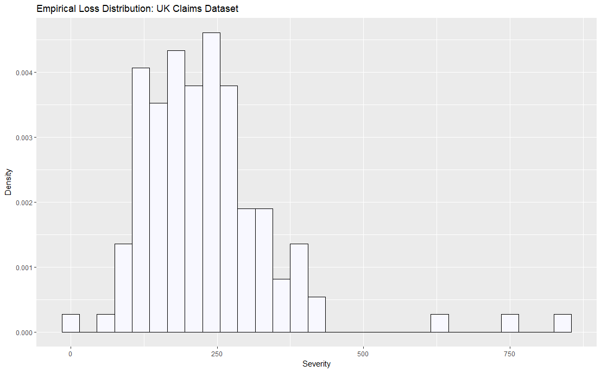
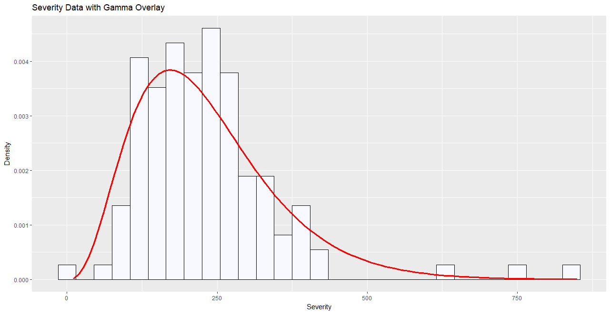

This post demonstrates how to fit parametric loss distributions to empirical loss data originally represented in a histogram. Before carrying out more sophisticated quantitative analysis, it can be useful to get a feel for how well the proposed distribution fits the data from a visual perspective. This can be accomplished by representing the histogram of loss data in terms of probabilities instead of frequencies, calculating the empirical mean and variance from the target dataset and finally determining the proposed distribution’s mean and variance using method of moments or maximum likelihood.
The dataset we’ll be using can be obtained here.
It represents auto insurance claims for damage to the owner’s car for
privately owned and comprehensively insured vehicles in Britain in 1975.
The dataset in its original form is included within the CASDatasets R
package identified as ukaggclaim.
Distributional Assumption
When deciding on a parametric form to use for modeling commercial insurance losses, a good starting point is the gamma distribution. It has many appealing characteristics w.r.t. modeling severity, including having lower bound at 0, exhibiting positive skewness (higher frequency or small losses, lower frequency of large losses) and is a member of the exponential family of distributions, which forms the basis for the distribution function used in generalized linear models. When dealing with complex initial modeling constraints, or when truncation (deductibles) or censoring (limits/layers of losses) need to be considered, the gamma becomes less appealing. But for ground-up losses for a line of business with moderate-to-high frequency of occurrence, the gamma is sufficient.
The gamma distribution can be parametrized is a number of ways, but we’ll
stick to the one specified in R’s manual page for dgamma, with density
given by:
where \(\Gamma(x)\) is the gamma function. In this representation, \(a\) represents the shape parameter, \(\theta\) the scale parameter. The mean and variance are:
A quantity commonly used in Actuarial analysis is the coefficient or variation, which is a measure of dispersion of a probability distribution. The is quantified as the ratio of standard deviation to mean. The gamma distribution is unique in that it exhibits constant coefficient of variation. Starting with the definition of coefficient of variation and the mean and variance for a gamma distribution, this assertion can be easily verified:
Loss Data
As mentioned in the introduction, our dataset represents auto insurance claims for damage to the owner’s car for privately owned and comprehensively insured vehicles in Britain in 1975. Fieldnames and descriptions are given below:
AGE
Age range of damaged vehicle driver
MODEL
Model of automobile (categorically encoded)
AUTO_AGE
Age range of damaged vehicle
LOSS
The loss amount (in pounds)
Investigating the relationships between dataset features and LOSS is beyond
the scope of this article. For our purposes, we’re interested in modeling the
distributional form of LOSS. We can start by creating a histogram of our
losses using ggplot2:
# ========================================================================== #
# Plot histogram of UKClaims dataset using ggplot2. #
# ========================================================================== #
library("data.table")
library("ggplot2")
# Create single-column data.table for use with ggplot.
DFInit = fread("UKClaims.tsv", sep="\t")
DF = DFInit[LOSS>0, .(LOSS)]
BINWIDTH = 30
# Generate histogram of empirical losses.
gghist = ggplot(DF) +
geom_histogram(
aes(x=LOSS, y=..density..), binwidth=BINWIDTH,
fill="ghostwhite", color="black"
) + xlab("Severity") + ylab("Density") +
ggtitle("Empirical Loss Distribution: UK Claims Dataset")
Notice that within geom_histogram, the y parameter within aes is set to
..density... This isn’t strictly necessary for visualizing the stand-alone
histogram, but is required when plotting a density along with a histogram as
we demonstrate next.
Running the above code produces the following:

More information on ggplot2’s aesthetic options and available themes can be found here.
Next we’ll parameterize a gamma distribution based on the empirical loss data, then plot the density over the top of the histogram to visually assess the quality of fit.
We can back out the scale parameter by dividing the variance of the loss data
by the mean (since \(a \theta^{2}/a \theta = \theta\)). Once the scale parameter
is known, the shape is calculated as \(E[X]/\theta\), the ratio of the loss data
mean to the scale parameter:
scale = var(DF$LOSS)/mean(DF$LOSS)
shape = mean(DF$LOSS)/scale
Beginning with the same ggplot expression used to generate the histogram of
empirical losses, we include a call to stat_function, which facilitates the
visualization of parametric distributions (among other things). This allows
for the histogram and gamma density to be overlaid on the same graph. The
gamma density is highlighted in red:
# ========================================================================== #
# Histogram/gamma density overlay #
# ========================================================================== #
library("data.table")
library("ggplot2")
# Create single-column data.table for use in ggplot2.
DFInit = fread("UKClaims.tsv", sep="\t")
DF = DFInit[LOSS>0, .(LOSS)]
BINWIDTH = 30
# Compute shape and scale for gamma parameterization.
scale = var(DF$LOSS)/mean(DF$LOSS)
shape = mean(DF$LOSS)/scale
# Plot gamma density over the top of histogram of empirical losses
ggboth = ggplot(DF) +
geom_histogram(
aes(x=LOSS, y=..density..), binwidth=BINWIDTH,
fill="ghostwhite", color="black"
) +
stat_function(
fun=dgamma, args=list(shape=shape, scale=scale),
colour="red", size=1.1
) +
xlab("Severity") + ylab("Density") + ggtitle("Empirical Loss Data with Gamma Overlay")
Running this code results in:

Qualitatively, the gamma distribution parameterized using the method of
moments fits reasonably well to the histogram of losses with binwidth=30.
Varying the binwidth away from 30 in either direction tended to make the fit
appear less adequate. Regardless, one would need to perform a battery of
goodness of fit tests before settling on a specific parametric form, but a
quick visual assessment like the one demonstrated in this post can at the
very least let you know if you’re on the right track.
Until next time, happy coding!